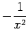
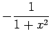
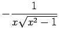
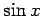

Inhalt Index DeskTop Bronstein

 Differentialrechnung Differentiation von Funktionen einer Veränderlichen Differentiationsregeln für Funktionen einer Veränderlichen
Differentialrechnung Differentiation von Funktionen einer Veränderlichen Differentiationsregeln für Funktionen einer Veränderlichen


| Funktion | Ableitung | Funktion | Ableitung |
| (Konstante) | 0 | ||
| x | 1 |  |
|
| nxn-1 | |||
|  | |||
|  | |||
| ex | ex |  | |
| bebx | |||
 |
|||
|  | |||
| ) | n[f(x)]n-1f'(x) | ||
Weitere Ableitungen elementarer Funktionen können aus der Umkehrung der Integrationsergebnisse in der Tabelle Unbestimmte Integrale elementarer Funktionen gewonnen werden.
Hinweis: Bei der Lösung praktischer Aufgaben ist es zweckmäßig, vor dem Differenzieren einer Funktion diese, sofern das möglich ist, in eine Summe umzuformen, indem Klammerausdrücke aufgelöst und ganzrationale Teile abgespaltet werden oder der Ausdruck logarithmiert wird.
| Beispiel A |
|
|
| Beispiel B |
|
|